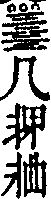

即非禪師全錄卷之三
陞座
結冬陞座示眾問繁不錄師云今日諸方結制也有押韻禪也有四六禪也有花柳摩捋禪也有奇怪極則禪廣壽雖無此等禪然已與諸人同此道聚又且不可恁麼杜口休去隨分說些平實禪以警其不逮各宜委悉豐主檀越以四事供養大開福田正要諸仁者修行辨道猶播佳種更要山僧隨機說法如降時雨令其抽信芽開心花遂克成就無上道果而後已此便是佛祖慧命有賴人天福田有望耳諸仁者當自生難遭思不可作容易想果能存了生死之志把從前許多學的解的所祕所蘊的雜毒盡底一翻翻卻直須豎起鐵脊梁突出兩眼睛盡三百六十骨節八萬四千毛孔併作趙州一箇無字一提提起如撐上水舟單篙直進心心無間念念無斷忽然拶透和箇身心器界山河大地一時瓦解冰消有日在其或立志不堅用心不切朝勤夕怠一曝十寒蒲團未暖妄想昏沈開靜放參交頭接耳威儀不檢細行不修又怕人簡點如此參禪參到驢年更驢年只成個光頭俗漢豈不孤負己靈虛消檀施唐喪光陰有何益哉古佛云制之一處無事不辦努力珍重下座。
示眾云參禪了生死了則度一切且道喚甚麼作生死又作麼生了莫是卜度公案是了生死麼癡守一橛是了生死麼學智機解是了生死麼好沒交涉真了生死的人如紅爐上一點雪相似始有少分相應其或未然切勿因循蹉過試思量世間農民不憚寒暑竭三時之力欲其廬舍之完食飲之充而不可得吾輩坐享信施華居美食寧知王家之餘祿皆農民之汗血也又不思父母不供甘旨師長固自遠離跋涉千里萬里親覲知識所圖何事若不真參力究以報四恩寸土滴水也難消各自鞭策努力珍重。
十一月十七日彌陀佛降誕日值冬至示眾印光問陰剝陽生請師宣明此理師云梅華心似鐵獨露一枝春進云妄消真現時如何師云一陽未復時薦取迺云慈明和尚冬日榜示僧堂作此註曰若人識得不離四威儀中首座見謂眾曰和尚今日放參廣壽云慈明祖揭榜僧堂黃河九曲直在其中首座白眾譯梵為華只得一半那一半作麼生你們不會請問阿彌陀佛且道阿彌陀佛即今在甚麼處其若不知山僧向第二門頭饒舌去也一念不生念念彌陀出現一塵不動塵塵極樂淨邦故經云心清淨即佛出世又云心淨則佛土淨當知十萬億土初不外乎一心也聽取一偈會得箇中無量壽祖師公案已全呈慶生不涉陰陽句水鳥風柯念佛名。
除夕示眾云古者謂山中無曆日寒盡不知年今者居山預備做歲與廛居何異山僧雖不預備亦愧古人多矣茲者諸執事強山僧應箇時節臨時無一物可為分歲記得現成一則公案總與諸人結般若緣去也今朝臘月三十日到來閻老子要徵汝們飯錢未審將何抵對一僧云小盡二十九大盡三十一僧云恭惟大王萬福一僧云從來不曾咬著一粒米一僧云今年錐也無一僧云昨日還了也一僧云心不負人面無慚色一僧展兩手示之觀此數轉語頗有衲僧氣格足以酬償然檢點將來猶欠息在其中有一轉語有權有實有照有用無得無失無欠無餘如有檢點得出許伊坐受人天供養其或未然五過五進一十。
元且祝聖云天得一以清地得一以寧君王得一天下貞衲僧得一公案現成現成公案如何舉一塵春風祝聖人。
示眾云說禪說道孤負佛祖論心論性埋沒己靈無言無說小乘枯禪流出胸襟急須吐卻縱展百千三昧到廣壽門下總用不著且道廣壽有甚麼長處一任諸人疑著。
中津太守源長勝檀護求薦故考中散大夫慈源惠公請陞座僧問秋雨晴秋風清秋山空秋水明正與麼時如何是薦拔一句答云體露金風進云此莫是中散大夫轉身處麼答云露也露也進云只如孝子請和尚舉揚大法以報罔極之恩還有端的分也無答云子試道看進云恁麼則子流孫派日綿遠為有豐源活水來師云放你三十棒乃云慈源居士在世之日持己也德為政也仁緇素均感其恩澤大限忽臨宴然委順此以見其生平也茲當七七之辰孝子請山僧舉揚法要以薦賢靈然山僧口挂壁上一法也無猶恐孤負不免於無法中演法以慰孝誠乃豎拂云還委悉麼當下薦得超拔已竟其或不委再垂方便有生有滅水面漚花無去無來空中鳥跡正當恁麼時且道向甚麼處安身立命良久云五品位中留不住無生國裏樂陶陶。
薦養德院益翁居士師云養德院有一片無陰陽地益翁居士未出母胎時已承紹了也直至于今始為安樂窩有孝女那須氏營齋修佛事請法為津梁冀其乃翁靈性圓明高超淨域不歷祇劫頓證無生正與麼時如何是益翁轉身一句夢回噴嚏如雷吼觸破彌陀鼻半邊。
薦男師云兵部太輔源長安居士天性良實精練家法退公之暇遵父祖庭訓崇信三寶以筆墨為佛事日書普門品一卷兼以禪宴為程課如此五十年若一日耳今春染微恙便有轉凡之念遽爾西生藉此平日信力般若力往生無疑然願力弘重還期應現耳老太守請法以資冥福聊說伽陀為薦長安之德蒼蒼洋洋長安面目山高水長大悲願重應現他方普現色身隨處津梁痘花暗結菩提果一度風來一度香。
島村自雄信士薦考理白日脫居士師云古今無二道天下共一理理白則日日解脫道明則處處皆通其通也去來無礙其脫也生死自在天上人間瀟灑慶快理白亡靈曾恁麼一回也未如曾恁麼許汝明白會得教家極則道理更須知有祖師西來直指超凡超聖的消息且作麼生是直指消息卓拄杖下座。
薦夫師云夫生必有死聚當合離縱位極聖賢亦不能免但凡聖與賢愚有等差耳若生無愧死無憾有不死者存道中其人歟今夏四月望後乃其大祥諱辰乃內道傳求法語追薦愧山野無言可說只教伊且自看生從何來死從何去者裏看得透便知道中安身立命處抑曉得自己本地風光與安身立命之處則生來死去全成一大解脫矣再聽一偈紅輪西去又還東蓮始開時果在中信女齋僧求薦拔缽盂張嘴笑薰風。
大堂林居士求薦故戚請對靈師迺云性秀性茂夫妻偕老正信樂善優游一世壽考而終必也往生無疑何用山僧超薦緣彼遺囑請山僧舉揚般若以助冥福故不違本願作法施去也遂舉趙州和尚因僧問未有世界早有此性世界壞時此性不壞如何是不壞之性州云四大五蘊進云此是壞的如何是不壞之性州云四大五蘊師云趙州寒潭徹底此僧徒費撈摸若向徹底處明取不變不遷一著子便知天地未分之先世界已壞之後於中無絲毫起滅無絲毫榮悴但隨所作心應所知量故有生住異滅且隨緣不變一句作麼生道時節不相饒乾坤常自在。
源長真檀越薦德叟老居士請陞座僧問七七由來四十九大海起舞崑崙走昔不曾生今不亡一道神光亙宇宙只如遠州太守恭請和尚舉揚佛法如何是薦拔德叟老居士底句師云不二門大啟為接老維摩進云盡大地總是和尚舌頭阿那箇是說法聽法者師云崑崙走入海進云與麼則上無攀仰下絕己躬去也師云劈破銕饅頭進云飽卻毗耶翁則得作麼生是蔭庇後昆一句師云臘雪播春風僧禮拜師云還我薦拔前一句僧問訊云空王為證明師云放過一著僧問德叟老居士現今在什麼處安身立命師云在山僧眉毛罅裏還見麼進云見了也師云換卻汝眼睛僧禮退師迺云今日孝子源長真太守請陞此座用薦尊嚴約祖師門下無啟口處然世諦報恩凡聖共遵山僧可不曲垂方便俯順孝誠作法檀二施等也遂豎拳云大眾委悉麼有去有來猶伸拳握掌了生達死如著褲脫衫此德叟老居士早已看破了也所以攃手之際屹挺霜崖結果收因如卸落葉而況不違本誓從初地中示現元勳而佐治邦國興隆三寶而護惜四生恩惠感在眾心功德播於後世定生勝處無疑何用山僧為薦雖然菩薩尚有隔陰之迷賢者寧無微細之惑微惑未盡莫證其極今也微惑既破令證其極直下與佛祖同源人天合轍隨處自在當處解脫正恁麼時如何是最後究竟的句以拂敲空云撥轉上頭關捩子閻浮兜率任翻身珊瑚撐月枝枝秀不愧靈山受記人下座。
戊申上元謝院事上堂法雲問福海一場圓覺壽山萬古伽藍因甚有結有解師豎拂云是解是結進云恁麼則靈山一會儼然未散師云眼裏一枝花進云當時世尊三昧為甚迦葉不知師云莫謗迦葉好進云今日和尚三昧為甚諸人總知師云莫謗自己好進云只如頂門別具摩醯眼和尚如何相接師云如何是頂門眼進云爍破佛祖面目師云腦後一槌自領出去雲禮拜云謝和尚證明師云更領一頓問欲識佛性義當觀時節因緣時節若至其理自彰正當恁麼時是何時節師云雪晴大地春進云恁麼則覿面相呈更無回互師云鷂子過新羅進云相識滿天下知心能幾人師云如何是知心一句進云今日親蒙和尚指示師云蹉過了也問廣壽第一關如何透師云腳下具眼始得進云如此則大道透長安師云你即今在關內在關外僧一喝師打云放過則不可迺云王臣檀護佛法山僧祖令全提領眾三載無愧始終飲水知源酬恩有地今也眉毛拆散光彩重重鼻孔遼天全彰意氣但隨時節因緣恁麼去則卷舒自在隱顯自由覿面一關如何通透如透得踏長安路晤天下知心人有甚麼難其或未然觸途成滯更有最後向上一關還委悉麼世尊三昧迦葉不知迦葉三昧阿難不知互不相知遞代流傳至于今日只如山僧三昧諸人皆知為甚彼此了無消息且道有流傳耶無流傳耶忽有箇漢出來道請和尚分付山僧呵呵大笑展兩手示之大眾證明更聽一偈頂眼揭開新日月許伊是廣壽同流檀恩答罷無餘事容我閒從瑞鹿遊下座。
小參
信士陳朝中祈嗣請小參問水澂月現有感必通請師瑞應麒麟兒師云張公喫酒李公醉進云恁麼則春色滿園關不住一枝紅杏出墻來師打云且惺惺乃云信是萬行功德母長養一切諸善根以之回屋頭春色以之植蔭涼大樹以之續照世明燈以之成諸佛子住以之撥轉如來法輪以之揭示衲僧巴鼻如川赴海如月臨淵隨機應現莫不皆然只如本有一句如何著力雲裏掣開金鳳鎖棒頭點出玉麒麟劉曜哲居士薦嚴請對靈小參問生是不生生死是不死死只如了生死無面目漢子和尚作麼生超薦師云無影枝頭一點春進云燈籠側耳露柱點頭師云知恩方解報恩乃豎拂云燈籠側耳露柱點頭且道聞底聞箇甚麼說底是甚麼法法本無法說本無說無法無說說法如雨者裏薦得乃能慶快平生報恩資有了了分明其或未然再垂方便去也一靈覺性本然清淨亙今古而不見其際窮十虛而不見其邊天地依此覆載日月依此照臨世界依此成立萬物依此出生此即人人本來面目此即空王本地風光只貴自家信取自家領略徹下通上渾無凝滯以之行孝孝無不至以之酬德德莫不酬正恁麼時如何是獨脫超昇一句擲拂云赤腳踏翻生死海全機靠倒涅槃山。
薦夫請小參甚吉問今日性茂為性秀請和尚演法未審何以超度師云業鏡臺前鬼放卵進云且喜塵塵入正受去也師云黃泉路上好翻身吉作禮而退僧問雪花片片不落別處畢竟落在何處師云汝道甚麼處進云無底籃子盛將來師云拈出無底籃看進云一段風光描不盡師云與汝三十棒問如何是無寒暑處師豎拂云向這裏薦取進云恁麼則禮拜退師云知落處始得一僧出禮拜即退師云三世諸佛到來也無開口處乃云觀色即空成大智故不墮生死觀空即色成大悲故不墮涅槃只如色空俱泯且道成箇甚麼苟能明此不但智悲無著處涅槃生死等空花涅槃生死既等空花父子夫妻皆同夢幻所以性秀善人年踰古稀不以子嗣介懷獨樂宿命可謂達矣客冬長揖人間怡然獨脫人羨其無累予知其煢也必如維摩詰以柔順為妻以智慧為男誠實為女日日團圞說無生話此之真眷屬非人間夢幻可比也惺惺不退固無疑如何是不墮凡聖一句劫外靈枝開獨秀石人夢破日三更。
獨立禪德出關小參云梅咢破雪風竹敲窗觀聽分明未透聲色直須於見聞俱泯處踏翻路頭撥轉關捩迥出威音前高超毗盧頂顯大機發大用建大法幢始與瞎驢氣分相投亦不虛幻寄活埋一番茲者千日期圓滿即且置作麼生是透關一句明星當午現梅燦一枝春。
小參師云融光道通緇素等追薦痘亡鳩造法華塔落成請山僧證明小參山僧久不說法亦無法可說不免舉些現成公案以副群誠六祖云心迷法華轉心悟轉法華且道喚甚麼作法華又作麼生轉若向者兩句下透得寶塔隨處出現玅法時時宣傳不惟令一切見聞隨喜者開示悟入共證一乘抑令華嚴會上所度善財童子及法華會上所度八歲龍女當下領諸痘亡數千童男女一齊成佛去也正當恁麼時如何是超方一句大地生頭角觸破太虛空下座。
太原左兵衛為薦故友盧君用翁允燕請小參師云盧翁二君生平有逆風把柁截斷眾流之能今日且置一邊只如圓覺經云我今妄身四大合成當觀身中堅硬歸地潤溼歸水煖氣歸火動轉歸風四大各離今者妄身當在何處到者裏不知落處喚作迷頭認影不妨就此影子裏借路還家直下回光返照窮究妄源究到山窮水盡密移一步便是安身立命之處一任團圞頭共說無生話二位覺靈還委悉麼自是不歸歸便得五湖煙景有誰爭。
肥前國佐賀郡弟子道零求薦父鍋島氏信濃守勝茂泰盛院澤圓良厚居士母岡部氏乾秀正貞孺人夫神代氏岡介常利全榮子長門守常宣姐亨巖玅貞設齋請小參師云龍泉聰禪師因僧問云今朝四月八天下叢林皆慶如來降誕未審如來向甚處降生泉於几上畫圓相示之師召大眾云若有會得者一圈落處未出母胎度人已畢透脫死生是甚閒事其或未然悉達太子又向者圈裏出生度諸有情勝茂信濃守暨五位覺靈亦向者圈裏入滅承佛記莂雖然此猶是建化門頭事若是出格丈夫超情離見別有生涯正當恁麼時把斷要津不通凡聖且道悉達太子及信濃守勝茂數位覺靈向甚麼處安身立命一把柳絲收不得和煙搭在玉欄干。
秉拂
福唐黃檗西堂寮秉拂小參僧問如何是格外句師云雪裏埋金進云莫是雪窟家珍麼師云馬頭漫栽角進云爭奈落眼成翳師云未肯和沙賣與人進云只如大海為墨須彌為筆一畫下不得時如何師云文彩已露問箭鋒相拄即不問單刀直入時如何師云我被汝看破僧作聽勢師云汝被我熱瞞進云了師云彼此不相饒試道一句看僧便轉身師云汝義墮了問忘心不息時如何師云拈出妄心看進云如何了得生死師云問取翁仲去僧禮退師乃云堂頭老人命第二座秉拂也是憐兒不覺醜兩堂諸大德降尊就卑大似逼石女生兒不肖一介麤行自了未能敢向作家前說黃道白無乃負布鼓而過面門今既推辭弗獲勉強從命不免將錯就錯翻轉古今窠臼奇言妙語拈過一邊熱喝痛棒送向他處焚三玄戈甲於二六峰頭碎五位鎗旗于三三潭畔行未行之令報莫報之恩及到人天眾前全無一點氣息然雖如是令不虛行卻舉些切要說話以副堂頭嚴命與諸兄弟遞相警策去也昔鹽官會下有主事僧忽見一鬼使來追僧告云某身充主事未暇修行乞容七日得否使云待為白王若許七日後來不然須臾便至言訖不見至七日後復來覓其僧了不可得諸兄弟還委悉麼主事僧七日精進鬼使便摸索不著且道向甚麼處安身立命如有緇素得出不孤生平撥艸瞻風苟或一向顢頇正好痛自鞭策莫待鐵棒當頭噬臍無及忠言逆耳伏望垂慈。
福唐黃檗首座寮秉拂陞座云拈出黃檗烏藤千聖魂飛膽落高懸雪峰古鏡野狐削蹟吞聲飽參尊宿有勞證明格外弟昆如何通信莫是默然良久麼豎拳下喝麼縱展百千三昧到這裏總納敗闕設有沒面目漢別轉一機向無湊泊處伸出三頭六臂奪折烏藤打破古鏡亦未是衲僧本分如何是衲僧本分棒頭有眼明如日灼破菱花未照前。
太和黃檗首座寮秉拂上堂僧問臨濟入門便喝德山入門便棒如何是臨濟意旨師云汝不是臨濟兒孫進云如何是德山受用師一喝進云臨濟喝德山棒是同是別師云一串串過進云先聖後聖其揆一也師云汝在甚麼處見臨濟德山僧無語師云虛頭漢迺云十五日已前行到說不到十五日已後說到行不到正當十五日行說俱到猶是半提作麼生是全提列位既勘不出適來問話寧屬影響就舉汝問我臨濟入門便喝我答了便下一喝古云一喝全賓主照用一時分且道賓主照用在喝裏耶喝外耶或不裏不外耶者裏具得一隻眼臨濟德山結舌有分其或遲疑秉拂頭陀再垂方便去也又舉臨濟上堂次兩堂首座相見同時下喝僧問臨濟還有賓主句也無濟云賓主歷然復召眾曰要會臨濟賓主句問取兩堂二首座師云首座兩張嘴其一舌頭放光濟祖一箇鼻借兩竅出氣賓主句還他一對無孔鐵鎚主中主須是老古錐始得頭陀恁麼舉似還愜兩堂諸昆仲證明也無選佛迸開千手眼崑崙騎象點頭回下座。
播州道婆元正薦夫道立請秉拂上堂悅眾問龍象雲集和尚說什麼法師云日午三更進云若有人耳聽如聾口說如啞又如何祇對師云石人反側僧便喝師云口不曾啞耳不曾聾問如何是向上一路師云向下問將來僧繞一匝云步步踏著師云縱繞百億須彌山到山僧門下總要喫棒在進云不是不是師云如是如是問猛虎當路坐如何過得師云渾身在裏許進云畢竟向何處安身立命師云汝喪身失命了也進云如某甲意竹密不妨流水過山高豈礙白雲飛師云且莫念詩篇僧禮拜云謝和尚答話師喝云虎頭虎尾一齊收問未開口已前請和尚開示師云未登座時答汝了問願和尚開甘露門師云▆著源頭一滴水為霖為雨遍三千惟澈問昔大慧省覲圓悟悟命秉拂有元禪客出問眉間掛劍時如何慧曰血濺梵天圓悟忻然曰問得極好答得更奇今請和尚別一轉語師云放下劍子進云固知和尚大有超方之作師云切忌犯鋒鋩澈禮拜云昔日大慧今日和尚師云被汝看破迺云聖壽上堂禾山打鼓驚動玅高峰點頭雙鶴亭起舞直得有情無情同來聽法十方龍象共作證明自愧慧淺德涼敢向河頭賣水然師命不敢違勉赴來機遂舉末山尼因灌谿問如何是末山境山云不露頂谿云如何是末山主山云非男女相谿乃喝云何不變去山云不是神不是鬼變箇甚麼師云灌谿雖有本分鉗鎚爭奈末山是鍛過的真金了無異色茲者道婆元正落髮修行頭腦與末山相似惜乎參究不到他田地所以見有男女有眷屬有菩提有涅槃若向非男女處一覷覷破菩提涅槃不消一捏到黃檗門下主山猶未肯點頭正當恁麼時如何是獨脫一句龐公過去久矣有煩眾師久立伏惟珍重。
孝子祐竹等薦故考常有信士請秉拂上堂僧問如何是佛師云頭頂五須彌進云如何是法師云口包四大海進云如何是僧師云雙眸懸日月進云三寶已蒙師指示向上一著如何趨向師打一棒云會取佛法僧僧一喝師云伶俐衲僧最難得齊雲問一法若有毗盧墮在凡夫萬法若無普賢失其境界去此二途請師超薦答云雲藏無縫襖進云恁麼則坐斷真空玅有直登上品蓮華去也答云花燦不萌枝僧禮拜而退師迺云生前無業累死去快如仙當下信得及不用哭蒼天其或未然再垂方便常有信士白手起家惜土如金周人之急惟義是從鄉人稱為善士也一旦無常乘時委順其孝子賢孫以父祖形容不可見而其靈明不昧未嘗亡也三七之辰特進山請法以薦其親是可謂能知孝道者耳予雖不敏承堂頭老人委命勉副來誠伏惟諦聽常有五十八年前之生也猶月映寒潭雖有有之有不有於有也五十八年後之滅也如雲散長空則無無之無不無於無也不無之無聖凡非減不有之有來去非增正當恁麼時如何是超空有證真常的消息頓明無相天真佛休戀黃金鑄舊顏下座。
立春秉拂小參問答竟迺云今日立春承方丈老人命第一座秉拂與大眾結般若緣有煩兩堂法昆仲降尊證明應箇時節去也青帝笏頭點出無邊春色達摩腳下重敷五葉一花復豎拂云且道祖師未西來時還有者箇也無若道有有在甚麼處若道無爭得者箇來若向箇裏覷得破一任開鑿人天眼目隨處簇錦鋪紅其或未然不免隨渠流轉且作麼生是不遷之句春風影裏乾坤大萬福堂中日月長。